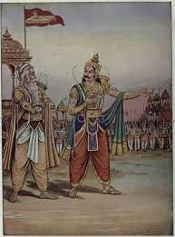

Vichitravirya
Vichitravirya had an elder brother named Chitrāngada, whom his half-brother Bhishma placed on the throne of the kingdom of the Kurus after Shantanu's death; he was a mighty warrior but the king of the Gandharvas defeated and killed him at the end of a long battle. Thereafter, Bhishma consecrated Vichitravirya, who was still a child, to the kingdom.When he had reached manhood, Bhishma married him to Ambika and Ambalika, beautiful daughters of the king of Kashi Kashya. Vichitravirya loved his wives very much and was adored by them. But after seven years he fell ill of consumption and could not be healed despite the efforts of his friends and physicians. Like his brother Chitrangada, he died childless. Subsequently, through a Niyoga relationship with his half-brother sage Vyasa, his wives and a maid(dasi) gave birth to three children, namely Dhritarashtra, Pandu and Vidura.
Chitrangada

Following the wishes of queen Satyavati, Bheeshma had placed Chitrangada on the throne of the kingdom of the hastinapur after Shantanu's death. Chitrangada was a great warrior and defeated many powerful enemies, Asuras and rakshasas. Finally, the king of the Gandharvas, who was his namesake, came to challenge him. A fierce battle took place between the two warriors on the bank of the river Hiranyavati, lasting three years. In the end the king of the Gandharvas defeated the Kuru king and killed him. After having performed the rites of the dead, Bheeshma immediately consecrated Chitrangada's younger brother Vichitravirya to the kingdom.